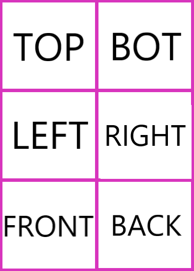
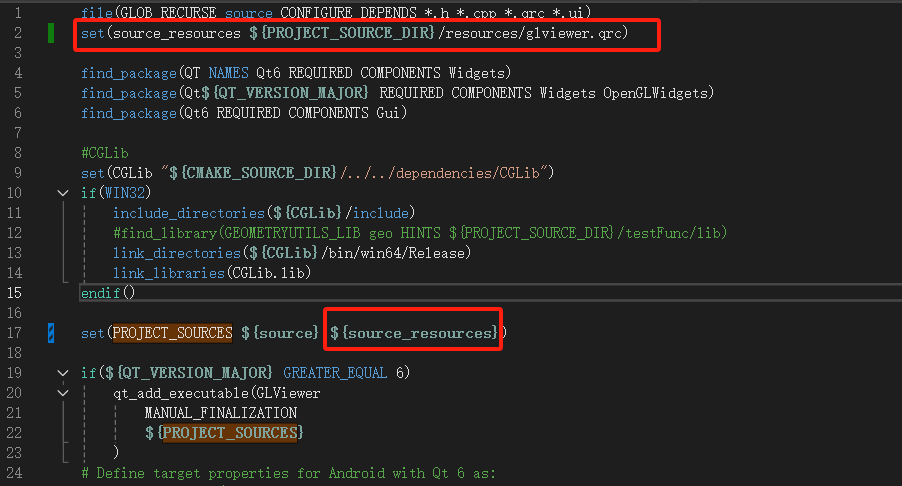
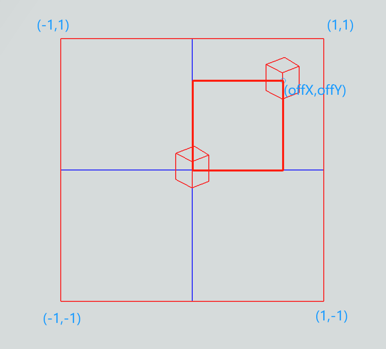
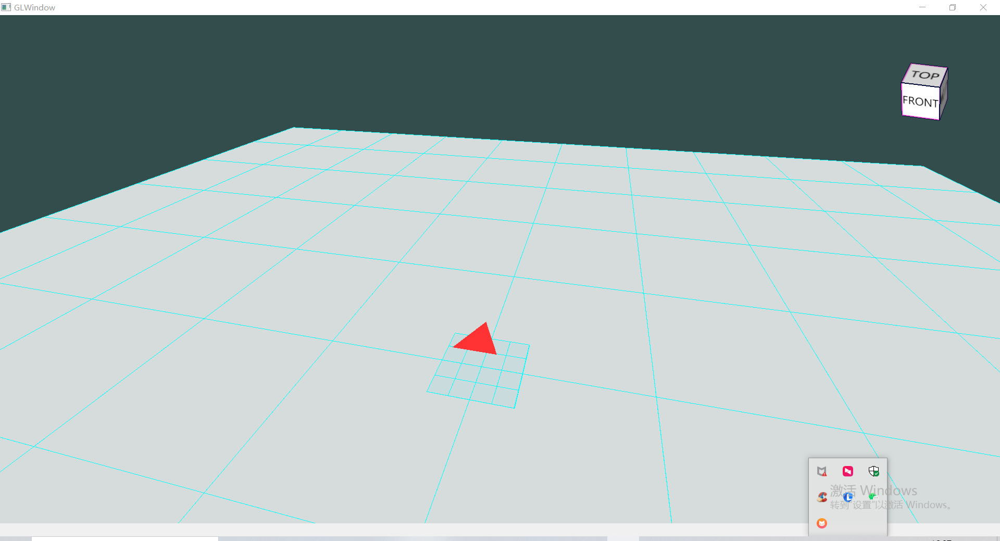
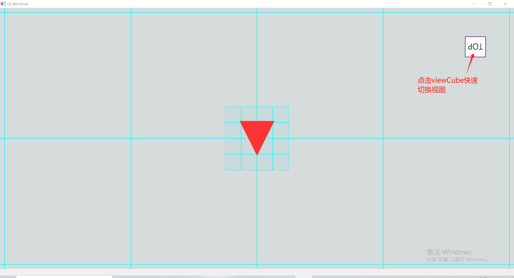

10.添加视图立方体（ViewCube）
视图立方体（ViewCube）能够与当前视角联动展示，可以方便的看出当前视角方位，同时也可以通过ViewCube的交互快速的切换到对应视图，如俯视图。
本节课程我们一起来创建ViewCube并把它加入到Viewer中。
10.1.引入处理纹理的shader
在src/shader目录下新建顶点着色器和片段着色器shader文件，
文件”1.model_loading_texture.vert”：
#version 450 core
layout (location = 0) in vec3 aPos;
layout (location = 1) in vec3 aNormal;
layout (location = 2) in vec2 aTexCoords;
out vec2 TexCoords;
out vec3 FragPos;
out vec3 Normal;
uniform mat4 model;
uniform mat4 view;
uniform mat4 projection;
void main()
{
FragPos = vec3(model * vec4(aPos, 1.0));
Normal = vec3(model * vec4(aNormal, 0.0));
TexCoords = aTexCoords;
gl_Position = projection * view * model * vec4(aPos, 1.0);
}
文件”1.model_loading_texture.frag”：
#version 450 core
out vec4 FragColor;
in vec2 TexCoords;
in vec3 Normal;
in vec3 FragPos;
uniform int sampleTexture = 1;
uniform sampler2D texture_diffuse1;
uniform vec3 lightPos;
uniform vec3 lightColor;
uniform vec4 objectColor;
void main()
{
// ambient
float ambientStrength = 0.3;
vec3 ambient = ambientStrength * lightColor;
// diffuse
vec3 norm = normalize(Normal);
vec3 lightDir = normalize(lightPos - FragPos);
float diff = max(dot(norm, lightDir), 0.0);
vec3 diffuse = diff * lightColor;
vec3 result = (ambient + diffuse) * objectColor.rgb;
if (sampleTexture == 1)
{
//FragColor = vec4(result, 0.3);
//FragColor = vec4(1.0f, 0.5f, 0.2f, 1.0f);//texture(texture_diffuse1, TexCoords);
vec4 sampled = vec4(1.0, 1.0, 1.0, texture(texture_diffuse1, TexCoords).r);
//FragColor = vec4(result, 1.0) * sampled;
FragColor = texture(texture_diffuse1, TexCoords) * vec4(result, 1.0);
//FragColor = texture(texture_diffuse1, TexCoords);
}
else
{
FragColor = vec4(result, objectColor.a);
}
}
提示：
别忘了把新创建的shader文件加入到shaders.qrc中，以便项目能够正常包含并使用资源。
<RCC>
<qresource prefix="/">
<file>shader/1.model_loading.frag</file>
<file>shader/1.model_loading.vert</file>
<file>shader/1.model_loading_texture.frag</file>
<file>shader/1.model_loading_texture.vert</file>
</qresource>
</RCC>
void initTextureShader(QOpenGLShaderProgram& shader)
{
bool result = true;
result = shader.addShaderFromSourceFile(QOpenGLShader::Vertex, ":/shader/1.model_loading_texture.vert");
if (!result) {
qDebug() << shader.log();
}
result = shader.addShaderFromSourceFile(QOpenGLShader::Fragment, ":/shader/1.model_loading_texture.frag");
if (!result) {
qDebug() << shader.log();
}
result = shader.link();
if (!result) {
qDebug() << shader.log();
}
}
10.2.纹理图片
我们在根cmakelists同级目录中创建resources文件夹，并把如下图片文件放进去，同时在resources中创建glviewer.qrc资源文件，将viewcube.png更新进去。

<RCC>
<qresource prefix="/">
<file>viewcube.png</file>
</qresource>
</RCC>
由于上述glviewer.qrc不在根cmakelists所在目录，我们需要把它添加到cmakelists中，以便项目能够正常包含并使用。

此时，可以在项目中使用viewcube.png了。
10.3.绘制viewCube
回顾以下上节workPlane的绘制步骤，还记得吗？先setup，然后draw，是的，viewCube也是如此。
void Model::setupViewCube()
{
vector<Vector3f> cubeVerts(4);
CGLibUtils::getRectSection(Vector3f::Zero, Vector3f::BasicZ, 50.0f, -50.0f, &cubeVerts[0]);
Body cube;
CGUtils::GenerateCube(cubeVerts, Vector3f::BasicZ, 100.0f, cube);
TriangleMesh cubeMesh;
CGUtils::TessellateBody(cube, cubeMesh);
//uv
vector<Vector2f> lstUvs;
lstUvs.push_back(Vector2f(0.0, 1.0));
lstUvs.push_back(Vector2f(0.5, 1.0));
lstUvs.push_back(Vector2f(0.5, 2.0 / 3.0));
lstUvs.push_back(Vector2f(0.0, 2.0 / 3.0));
lstUvs.push_back(Vector2f(0.5, 2.0 / 3.0));
lstUvs.push_back(Vector2f(1.0, 2.0 / 3.0));
lstUvs.push_back(Vector2f(1.0, 1.0 / 3.0));
lstUvs.push_back(Vector2f(0.5, 1.0 / 3.0));
lstUvs.push_back(Vector2f(0.5, 1.0));
lstUvs.push_back(Vector2f(1.0, 1.0));
lstUvs.push_back(Vector2f(1.0, 2.0 / 3.0));
lstUvs.push_back(Vector2f(0.5, 2.0 / 3.0));
lstUvs.push_back(Vector2f(0.0, 2.0 / 3.0));
lstUvs.push_back(Vector2f(0.5, 2.0 / 3.0));
lstUvs.push_back(Vector2f(0.5, 1.0 / 3.0));
lstUvs.push_back(Vector2f(0.0, 1.0 / 3.0));
lstUvs.push_back(Vector2f(0.5, 1.0 / 3.0));
lstUvs.push_back(Vector2f(1.0, 1.0 / 3.0));
lstUvs.push_back(Vector2f(1.0, 0.0));
lstUvs.push_back(Vector2f(0.5, 0.0));
lstUvs.push_back(Vector2f(0.0, 1.0 / 3.0));
lstUvs.push_back(Vector2f(0.5, 1.0 / 3.0));
lstUvs.push_back(Vector2f(0.5, 0.0));
lstUvs.push_back(Vector2f(0.0, 0.0));
cubeMesh.SetUVs(lstUvs.size(), &lstUvs[0].U);
auto mesh = ConvertMesh(cubeMesh);
mapName2VBody.insert(make_pair(ViewerCache::viewCube, BodyInfo(cube, cubeMesh)));
mapName2VMesh.insert(make_pair(ViewerCache::viewCube, MeshInfo(mesh, Vector3W(1.0f, 1.0f, 1.0f, 1.0f))));
}
我们根据尺寸数据获取矩形截面，然后创建拉伸体，继而得到mesh，然后为mesh中的顶点添加uv属性，以便上述viewcube.png能够正确的贴到mesh上。
最后，我们将viewCube对应的mesh和body添加到了map中，其中在绘制时需要用到mesh，在点击viewCube以便切换到对应试图时需要使用body进行点击判断，后续内容会讲解到。
细心的你注意到了，uv坐标并不是随意设置的。是的，我们所使用的贴图中包含6个面的纹理，将图片对应纹理部分正确的贴合到mesh的6个面上，由于图片整体对应的uv是(0,0)~(1,1)，
所以每个面的4个顶点的uv需要与对应图片部分映射，感兴趣的同学可以自行将上述mesh展开来模拟映射过程，检验uv属性数据。
然后，我们来绘制，
void Model::DrawViewCube(QOpenGLShaderProgram& shader)
{
auto itrFind = mapName2VMesh.find(ViewerCache::viewCube);
if (itrFind == mapName2VMesh.end())
return;
auto& viewCube = itrFind->second;
auto textTexture = ViewerUtils::getOrCreateImageTexture(":/viewcube.png");
textTexture->bind(0);
shader.setUniformValue("texture_diffuse1", 0);
// viewCube
shader.setUniformValue("objectColor", viewCube.color.GetWX(), viewCube.color.GetWY(), viewCube.color.GetWZ(), viewCube.color.GetW());
viewCube.current->Draw(shader);
textTexture->release();
}
这个过程熟悉吗？
10.4.在渲染循环中调用绘制
上述我们得到的mesh是中心在原点，长宽高均为50的立方体，我们怎么把它放到三维场景的右上角呢？在视角变动的过程中怎么样让它的中心固定呢？
这需要我们回顾渲染管线章节部分内容，局部坐标-（modelMatrix）->世界坐标-（viewMatrix）->观察空间-(projectionMatrix)->裁剪空间，之后经过透视除法变换到[-1,1]空间范围，然后通过视口变换映射到屏幕上的像素范围（如800*600）。
我们采用如下策略来处理viewCube：
- 转换为世界坐标，通过
modelMatrix； - 使用camera的Front向量构造
viewMatrix，具体的是从原点逆向Front偏移一定距离，然后看向原点（也就是viewCube的中心）构造viewMatrix；
Important
想象一下，这样在视角旋转等变换过程中，viewCube一直以原点为中心点同步转动！
怎么样将viewCube的中心固定到屏幕固定位置（如右上角）呢？我们知道，之后会通过projectionMatrix投影到裁剪空间，在此过程中我们能做点什么吗？
- 我们正常构造
projectionMatrix，投影后随即叠加一个偏移，将裁剪坐标偏移（如(0.85,0.7)）到屏幕右上角；

至此，viewCube会随着视角的转动而同步的以屏幕固定位置为中心转动，其大小和中心不变。
我们来看在paintGL函数中的实现：
// for view cube
m_projection4ViewCube.setToIdentity();
m_projection4ViewCube.perspective(45.0f, (float)m_camera.SCR_WIDTH / (float)m_camera.SCR_HEIGHT, 0.1f, 100.0f);
// view cube
QMatrix4x4 viewMatNoTrans = m_camera.GetViewMatrix4VieweCube();
QMatrix4x4 offViewCube;
getViewCubeProjectOffset(offViewCube);
QVector3D posLtCube = (-10 * m_camera.Front);
QVector4D lightCube = /*m_modelMatrix.inverted() **/ QVector4D(posLtCube.x(), posLtCube.y(), posLtCube.z(), 1.0);
m_textureShader.bind();
m_textureShader.setUniformValue("lightColor", QVector3D(1.0f, 1.0f, 1.0f));
m_textureShader.setUniformValue("lightPos", lightCube.toVector3D());
m_textureShader.setUniformValue("projection", offViewCube * m_projection4ViewCube);
m_textureShader.setUniformValue("view", viewMatNoTrans);
m_textureShader.setUniformValue("model", m_modelMatrix);
m_model->DrawViewCube(m_textureShader);
//qDebug() << m_textureShader.log();
m_textureShader.release();
10.5.效果
如果一切正常，或者遇到的问题被排查解决，那么运行后可以看到如下效果。

10.6.通过viewCube切换视图
10.6.1.监控鼠标事件
我们在event函数中添加如下实现监控鼠标左键点击事件，
if (e->type() == QEvent::MouseButtonPress)
{
auto event = static_cast<QMouseEvent*>(e);
if (event->button() == Qt::LeftButton)
{
onMouseLeftPress(event);
}
}
通过点击的像素点判断是否点中了viewCube以及点击的是哪个面，然后调用此前Camera类对象的FitView函数切换到对应视图。
void GLView::onMouseLeftPress(QMouseEvent* event)
{
// check if clicked the view cube
int flag = ClickedViewCube(event->x(), event->y());
if (flag != -1)
{
m_camera.FitView(flag);
return;
}
}
Important
由于我们缓存的viewCube对应的Body是绕原点同步转动的，所以我们需要对鼠标点击得到的像素位置进行渲染管线的逆向变换，然后构造射线再与Body进行射线相交判断。 怎么逆向呢？回顾一下上文中我们再8.4节中提到的处理过程~
float xStio, yStio;
getViewCubeProjectOffsetStio(xStio, yStio);
px = px - m_camera.SCR_WIDTH * 0.5 * xStio;
py = py + m_camera.SCR_HEIGHT * 0.5 * yStio;
QVector3D rayOri4VCube, rayEnd4VCube;
QVector3D cmrPos4VCube = m_camera.GetCameraPos4ViewCube();
ViewerUtils::getPickRay(px, py, { 0, 0, m_camera.SCR_WIDTH, m_camera.SCR_HEIGHT }, cmrPos4VCube/*m_camera.Position*/, m_modelMatrix.inverted(), m_camera.GetViewMatrix4VieweCube().inverted(), m_projectionMat.inverted(), rayOri4VCube, rayEnd4VCube);
// 射线相交判断......
好啦，如果一切正常，或者遇到的问题被排查解决，那么运行后可以看到如下效果，如果有问题请参考本节对应工程代码。
